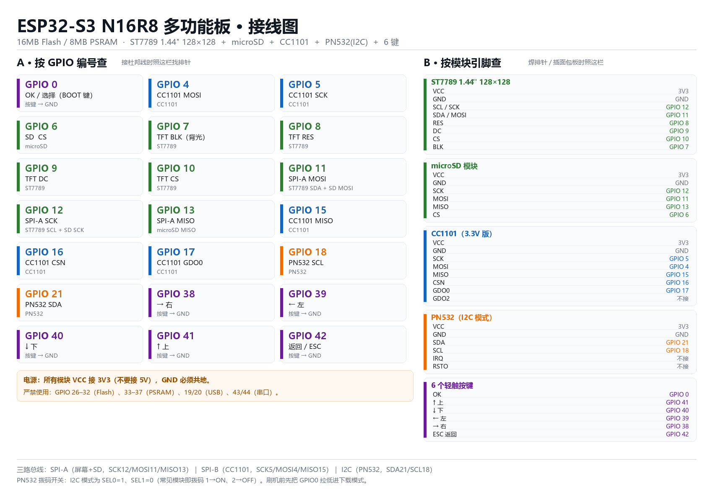

目标板：ESP32-S3 N16R8（16 MB Flash + 8 MB PSRAM）
固件：Bruce（开源，AGPL-3.0，https://github.com/BruceDevices/firmware）
外设：ST7789 1.44″ 128×128、microSD、CC1101、PN532（I2C）、6 个按键
Flipper Zero 的官方固件刷不进 ESP32。 它的主控是 STM32WB55（ARM Cortex-M4），和 ESP32-S3 是两套完全不同的架构，不存在"移植固件"这回事。
能做到"功能类似"的，是另一批用 ESP32 重写的开源项目。你给的这套模块（CC1101 + PN532 + ST7789 + SD）里，Bruce 是支持度最高的一个：官方功能表里 CC1101 和 PN532 都是原生支持项，而且它的官方 RF Reaper 开发板用的就是 ESP32-S3 + 16MB/8MB，硬件形态和你的几乎一致。
所以本方案 = Bruce + 为你这块板子新写的板级配置。不是刷一个现成 bin，而是按你的引脚重新编译一份。
| 模块 | 建议型号 | 关键点 |
|---|---|---|
| 主控 | ESP32-S3-DevKitC-1 N16R8 | 16MB Flash / 8MB OPI PSRAM |
| 屏幕 | ST7789 1.44″ 128×128 SPI | 8 针：VCC/GND/SCL/SDA/RES/DC/CS/BLK |
| 存储 | microSD 卡模块（SPI） | 卡格式化成 FAT32，≤32GB |
| Sub-GHz | CC1101 模块 | 必须 3.3V 版，带天线 |
| NFC/RFID | PN532（红板 V3） | 走 I2C，拨码 1→ON、2→OFF |
| 按键 | 6× 6×6 轻触开关 | 一端接 GPIO，一端接 GND |
供电警告：CC1101、PN532、ST7789、SD 全部是 3.3V 器件。VCC 一律接 3V3，不要接 5V，5V 会烧 CC1101 和 PN532 的逻辑。所有模块必须共地。

| 总线 | 用途 | 引脚 |
|---|---|---|
| SPI-A | ST7789 + microSD 共用 | SCK=12，MOSI=11，MISO=13 |
| SPI-B | CC1101 独占 | SCK=5，MOSI=4，MISO=15 |
| I2C | PN532 | SDA=21，SCL=18 |
屏幕和 SD 共用一组 SPI，靠各自的 CS 分时占用；CC1101 单独一路，避免和屏幕抢总线导致射频收发不稳。
ST7789 1.44″
| 模块引脚 | 接到 |
|---|---|
| VCC | 3V3 |
| GND | GND |
| SCL / SCK | GPIO 12 |
| SDA / MOSI | GPIO 11 |
| RES | GPIO 8 |
| DC | GPIO 9 |
| CS | GPIO 10 |
| BLK | GPIO 7 |
microSD 模块
| 模块引脚 | 接到 |
|---|---|
| VCC | 3V3 |
| GND | GND |
| SCK | GPIO 12 |
| MOSI | GPIO 11 |
| MISO | GPIO 13 |
| CS | GPIO 6 |
CC1101
| 模块引脚 | 接到 |
|---|---|
| VCC | 3V3 |
| GND | GND |
| SCK | GPIO 5 |
| MOSI | GPIO 4 |
| MISO | GPIO 15 |
| CSN | GPIO 16 |
| GDO0 | GPIO 17 |
| GDO2 | 不接 |
PN532（I2C 模式）
| 模块引脚 | 接到 |
|---|---|
| VCC | 3V3 |
| GND | GND |
| SDA | GPIO 21 |
| SCL | GPIO 18 |
| IRQ | 不接 |
| RSTO | 不接 |
按键（每个按键一端接 GPIO，另一端接 GND；固件内部已开上拉）
| 功能 | GPIO |
|---|---|
| OK / 选择 | 0（可直接用板载 BOOT 键） |
| ↑ 上 | 41 |
| ↓ 下 | 40 |
| ← 左 | 39 |
| → 右 | 38 |
| 返回 / ESC | 42 |
ESP32-S3 N16R8 有一批引脚被内部占用，接上去必然出问题：
| 引脚 | 占用原因 |
|---|---|
| GPIO 26–32 | SPI Flash |
| GPIO 33–37 | 八线 PSRAM（R8 特有） |
| GPIO 19 / 20 | 原生 USB D− / D+ |
| GPIO 43 / 44 | UART0（留给串口日志） |
| GPIO 48 | DevKitC-1 板载 RGB 灯，所以 I2C 没用它 |
| GPIO 0 / 45 / 46 | 启动 strapping（0 用作按键是安全的，只是按住上电会进下载模式） |
✅ 这一步已经替你做完了。 固件已编译并烧录到 COM8，esptool 校验通过（Hash of data verified）。
- 合并镜像：F:\esp32-build\firmware-main\Bruce-s3-n16r8-multitool.bin（3,769,568 字节）
- 占用：3.7 MB / 16 MB（22.1%）
⚠️ 烧完必须按一下板上的 RST 键（或拔插一次 USB）才会跑应用。
ESP32-S3 走原生 USB 复位时会强制进入下载模式，串口会停在boot:0x0 (DOWNLOAD(USB/UART0))+waiting for download，这是正常现象，不是烧录失败。
cd F:\esp32-build\firmware-main
$env:PATH = "F:\pio-core\bin;$env:PATH"
$env:PLATFORMIO_CORE_DIR = 'F:\pio-core'
python -m platformio run -e s3-n16r8-multitool -t upload --upload-port COM8python -m esptool --chip esp32s3 --port COM8 --baud 921600 `
write-flash 0x0 "Bruce-s3-n16r8-multitool.bin"合并镜像已经把 bootloader（0x0）、分区表（0x8000）、应用（0x10000）打包在一起，只需要烧 0x0 一个地址。
正常情况下 esptool 会自动复位。如果连不上：按住 BOOT（GPIO0）不放 → 点一下 RST → 松开 BOOT。
Config：CC1101PN532 I2CFiles 确认 SD 挂载成功。RF → Config 确认频段（433/315/868 MHz），再试 Scan。能用：Sub-GHz 收发/频谱/重放（CC1101）、NFC/RFID 读卡写卡（PN532）、BadUSB（S3 原生 USB）、WiFi/BLE 相关功能、SD 文件管理、JS 脚本解释器。
受限：
| 现象 | 处理 |
|---|---|
| 白屏 / 花屏 / 闪 | 杜邦线太长，把 pins_arduino.h 里 SPI_FREQUENCY 从 27000000 降到 20000000 |
| 颜色红蓝反了 | TFT_RGB_ORDER 从 0 改成 1 |
| 画面反色 | 加 #define TFT_INVERSION_ON |
| 屏幕不亮 | 检查 BLK 是否接 GPIO 7，以及亮度设置是否被调到 0 |
| SD 挂载失败 | 卡必须 FAT32；CS 必须是 GPIO 6；确认 3.3V 供电够 |
| PN532 初始化失败 | 拨码是不是 I2C（1→ON、2→OFF）；SDA/SCL 有没有接反；模块是否 3.3V |
| CC1101 收不到信号 | 天线接了没；GDO0 必须接 GPIO 17；模块是不是 3.3V 版本 |
| 烧录时报 "Failed to connect" | 手动进下载模式（BOOT + RST） |
| 无线一开就重启 | 供电不足，给 3.3V 加个大电容或换独立 LDO |
为了让你这块板能编译，我在 Bruce 源码里加了这些东西（都可复现）：
| 文件 | 作用 |
|---|---|
boards/s3-n16r8-multitool/pins_arduino.h | 新增：本板全部引脚定义 |
boards/s3-n16r8-multitool/interface.cpp | 新增：按键扫描、背光、休眠、关机 |
boards/s3-n16r8-multitool/s3-n16r8-multitool.ini | 新增：编译环境 |
boards/_boards_json/s3-n16r8-multitool.json | 新增：板卡描述（16MB Flash / OPI PSRAM） |
boards/pinouts/pins_arduino.h | 加一行分支，指向新板 |
platformio.ini | 注册新环境、把工具链下载地址改成镜像、把包目录指到 F 盘 |
改引脚只需要动第一个文件，改完重新 pio run 即可。
| 路径 | 内容 |
|---|---|
F:\esp32-build\firmware-main | Bruce 源码 + 本板配置 + 编译产物 |
F:\pio | ESP32-S3 工具链、框架库、依赖库（约 4.6 GB） |
F:\pio-core | PlatformIO core、编译器、uv 虚拟环境 |
为了在这台机器上跑通，额外处理了 4 个环境问题（换台机器一般不需要）：
ghfast.top 镜像（git 全局 insteadOf、platform.json、各 tools.json）。F:\pio 这种极短路径。pio 命令 → 生成 F:\pio-core\bin\pio.cmd 垫片。libnet80211.a 补丁脚本用错工具链前缀 → 手动用 xtensa-esp-elf-objcopy 打上 --weaken-symbol=ieee80211_raw_frame_sanity_check 并补 .patched 标记。另外两处依赖调整：
PNGdec 用最新版（Bruce 的回调返回 int，1.1.2 是 void，签名不兼容）。ESP8266Audio 改为本地 lib/ESP8266Audio（它的 opus 子模块在 gitlab 上 504，库管理器拉不下来）。这套硬件本身是合法的通用电子模块，但它是双用途的：
工具怎么用取决于人。请把它当学习射频和 NFC 原理的实验平台。